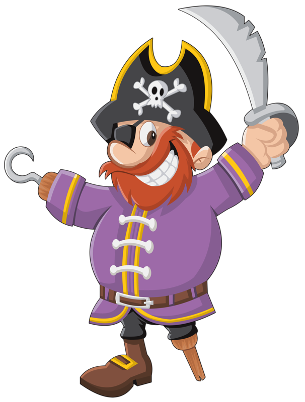

<ion-header>
  <ion-toolbar>
    <ion-buttons slot="start"> 
      <ion-button [routerLink]="['/']">
        <ion-icon name="arrow-back"></ion-icon>
      </ion-button>
    </ion-buttons>
    
    <ion-title>Gestión</ion-title>
    <ion-buttons slot="end">    
      <ion-button [routerLink]="['/juego','create','']" style="margin: 20px;">
        <ion-icon name="add"></ion-icon>
        <ion-label style="margin:10px">CREAR JUEGO</ion-label>
      </ion-button>
    </ion-buttons>
  </ion-toolbar>
</ion-header>

<loading-bar *ngIf="showLoadIcon"></loading-bar>

<ion-content  *ngIf="gamesCreated">
  <div style="max-width: 75%;" *ngIf="gamesCreated.length==0; else mostrarResultados">

    <div class="pirata">
      <div class="speech-bubble">
        <ion-label color="light" style="font-weight: bold;">
          Parece que no hay nada que mostrar.
          Empieza a crear juegos para divertirte.
        </ion-label>
        
      </div>
      
      <div>
        
      </div>
    </div>

  </div>
  <ng-template #mostrarResultados>
  <ion-item *ngFor="let game of gamesCreated" [routerLink]="['/juego','propio',game.id]">
    <ion-thumbnail slot="start">
      
    </ion-thumbnail>
    <ion-label>{{game.data.title}} - {{game.data.points}} puntos</ion-label>
    <ion-icon *ngIf=!isMobile name="arrow-forward" slot="end"></ion-icon>
  </ion-item>
</ng-template>
</ion-content>

